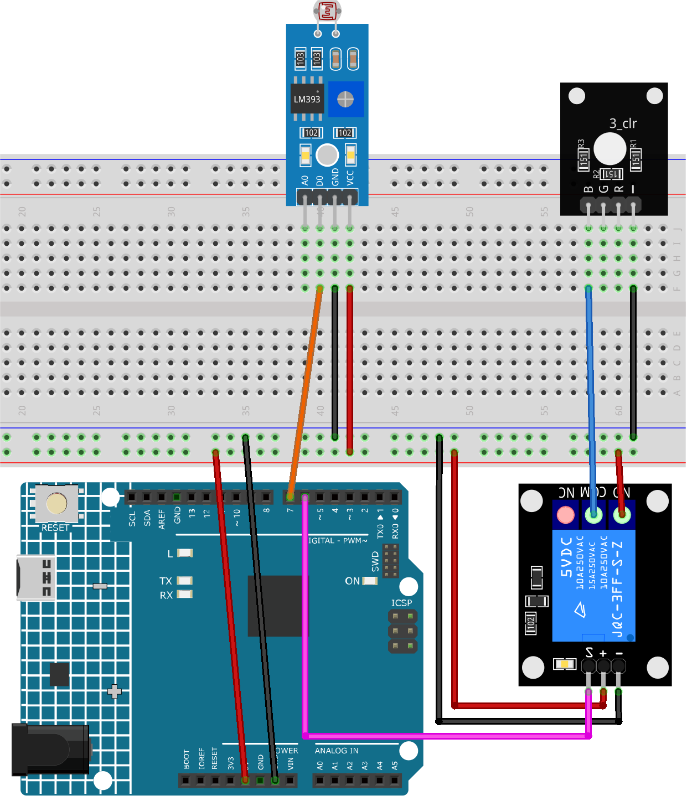

Bemerkung
Hallo und willkommen in der SunFounder Raspberry Pi & Arduino & ESP32 Enthusiasten-Gemeinschaft auf Facebook! Tauchen Sie tiefer ein in die Welt von Raspberry Pi, Arduino und ESP32 mit anderen Enthusiasten.
Warum beitreten?
Expertenunterstützung: Lösen Sie Nachverkaufsprobleme und technische Herausforderungen mit Hilfe unserer Gemeinschaft und unseres Teams.
Lernen & Teilen: Tauschen Sie Tipps und Anleitungen aus, um Ihre Fähigkeiten zu verbessern.
Exklusive Vorschauen: Erhalten Sie frühzeitigen Zugang zu neuen Produktankündigungen und exklusiven Einblicken.
Spezialrabatte: Genießen Sie exklusive Rabatte auf unsere neuesten Produkte.
Festliche Aktionen und Gewinnspiele: Nehmen Sie an Gewinnspielen und Feiertagsaktionen teil.
👉 Sind Sie bereit, mit uns zu erkunden und zu erschaffen? Klicken Sie auf [hier] und treten Sie heute bei!
Lichtsteuerungsschalter
Dieses Projekt ist ein System zur Lichtsteuerung mittels Schalter. Der Hauptgedanke ist die Verwendung eines Fotowiderstand-Sensormoduls, um die Umgebungshelligkeit zu erfassen und daraufhin ein Relaismodul zu steuern. Sobald die Umgebungshelligkeit unter einen bestimmten Grenzwert fällt, wird das Relais aktiviert. Liegt die Helligkeit über dem Grenzwert, wird das Relais deaktiviert.
Warnung
In dieser Demonstration verwenden wir ein Relais, um ein RGB-LED-Modul zu steuern. Für reale Einsatzszenarien ist diese Vorgehensweise jedoch möglicherweise nicht optimal.
Während das Relais in tatsächlichen Anwendungen auch zur Steuerung anderer Geräte verwendet werden kann, ist beim Umgang mit HOHER Wechselspannung äußerste Vorsicht geboten. Unachgemäße oder fehlerhafte Anwendung kann zu schweren Verletzungen oder gar zum Tod führen. Dieses Projekt richtet sich daher an Personen, die mit HOHER Wechselspannung vertraut und sachkundig sind. Sicherheit hat immer Vorrang.
1. Schaltungsaufbau


2. Code
Öffnen Sie die Datei
03-fun_Light_control_switch.inoim Verzeichnisultimate-sensor-kit\fun_project\03-fun_Light_control_switchoder kopieren Sie den Code in die Arduino IDE.
3. Code-Erklärung
Das Kernprinzip dieses Projekts ist die Verwendung eines Fotowiderstand-Sensormoduls zur Erfassung der Umgebungshelligkeit. Fotowiderstände ändern ihren Widerstand je nach Lichteinfall. Diese Eigenschaft wird im Sensormodul genutzt, um ein digitales Ausgangssignal zu erzeugen. Fällt die Helligkeit unter den eingestellten Grenzwert, sendet der Sensor ein HIGH-Signal an das Arduino, das wiederum das Relais aktiviert.
Bemerkung
Der Fotowiderstand-Sensor verfügt über ein Potentiometer, mit dem der Grenzwert für die Ausgabe von HIGH bzw. LOW eingestellt werden kann. Je nach gewünschtem Helligkeitsniveau für die Schaltung muss dieser Wert eventuell angepasst werden.
Konstanten und Pins definieren
An dieser Stelle legen wir die Pins fest, die für das Relais und den Sensor verwendet werden. Wir verwenden das Schlüsselwort
const, da diese Pinnummern während der Laufzeit des Programms unverändert bleiben.const int RelayPin = 6; const int sensorPin = 7;
Initialisierung in der setup()-Funktion
Die
setup()-Funktion wird einmalig beim Start des Programms ausgeführt. Hier legen wir fest, dassRelayPinein Ausgang ist, da wir Signale senden werden, um das Relais zu steuern. Außerdem starten wir die serielle Kommunikation mit einer Baudrate von 9600 für Debugging-Zwecke.void setup() { // Set RelayPin as an output pin pinMode(RelayPin, OUTPUT); // Start the Serial communication for debugging Serial.begin(9600); }
Sensordaten lesen und Relais steuern
Die Hauptlogik findet in der
loop()-Funktion statt. Hier wird der Wert des Fotowiderstand-Sensors wiederholt ausgelesen. Liefert der Sensor einen Wert von 1 (was auf ein Unterschreiten des Helligkeitsgrenzwerts hindeutet), wird das Relais durch Setzen vonRelayPinauf HIGH aktiviert. Andernfalls wird es durch Setzen auf LOW deaktiviert.void loop() { // Read the value from the photoresistance sensor module const int sensorValue = digitalRead(sensorPin); // If the light level is lower than the threshold (sensor value equals 1), // switch the relay module ON. if (sensorValue == 1) { digitalWrite(RelayPin, HIGH); } else // If the light level is higher than the threshold (sensor value equal 0), // switch the relay module OFF. { digitalWrite(RelayPin, LOW); } }